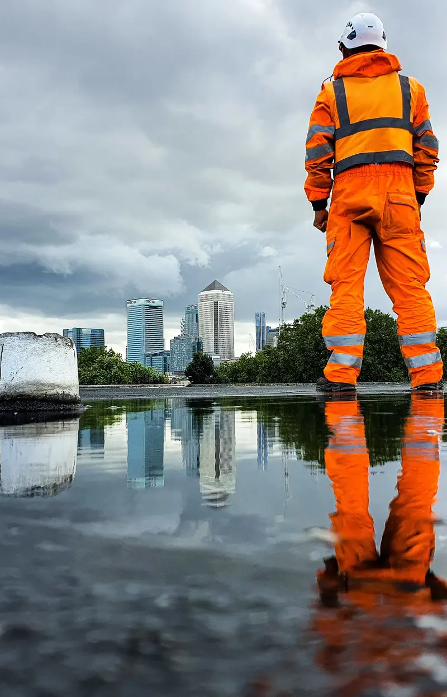

Ultra Worx Ltd. was born out of a passion for safety, quality, and technical excellence in working-at-height solutions. Our founders—Evelake Halcyon, Tony Lam, and Michael Carver—noticed a significant gap in the rope access industry. While other sectors within construction maintained rigorous safety standards, rope access often lagged behind, with risk assessments delayed and vital inspections overlooked. With over 15 years of combined experience on some of the largest construction sites in the country, we recognized that a renewed focus on safety and robust quality control was desperately needed. From our inception, our mission has been clear: to provide working-at-height solutions that clients can trust completely, ensuring that every project is executed with precision, compliance, and an unwavering commitment to safety.
Our Story
Our Approach
At Ultra Worx Ltd., our approach is built on a foundation of tailored solutions and a rigorous commitment to quality. Every project begins with a comprehensive review by our operations team, where we develop a detailed proposal that outlines how each challenge will be addressed. This proposal then moves to our health and safety department for meticulous evaluation, ensuring that all risk assessments are signed off before the job is booked. We adhere to internationally recognized standards such as ISO9001 and ISO45001—with full certification on our roadmap—to guarantee that our processes are both safe and efficient. Our IRATA-certified technicians are at the heart of this approach. They use advanced techniques and state-of-the-art equipment to access even the most challenging environments safely. Whether working in construction, industrial maintenance, or facility management, we customize our services to meet the unique needs of each client. Every completed job is rigorously assessed by our quality director, whose role is to upskill our operatives and ensure that our high standards are consistently met. Our proven track record on some of the largest construction sites in the country stands as a testament to our ability to push the boundaries of what’s possible at height.

Our Vision
Looking to the future, our vision is to set the benchmark for rope access safety not only in the UK but as a model for the global industry. We aspire to transform the standards of working-at-height by championing a culture of continuous improvement, innovation, and transparency. Our goal is clear: to make safety the non-negotiable cornerstone of every project and to inspire other companies to adopt the same rigorous approach. We are committed to being the trusted partner that our clients can rely on when facing complex access challenges. By continuously refining our tailored solutions, proactive risk management, and technical expertise, we aim to create an environment where safety is seamlessly integrated into every aspect of our work. Ultimately, our ambition is to make the UK the safest rope access country in the world, setting a standard that elevates the entire industry and ensures that every client benefits from a service that is as dependable as it is innovative.